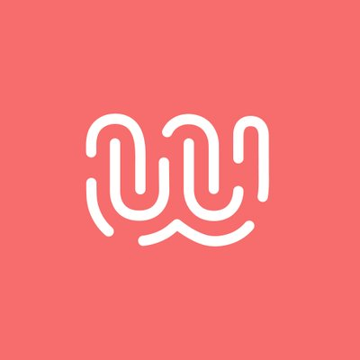
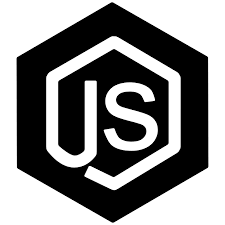
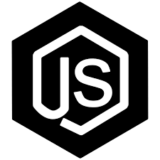

Développeuse FullStack Junior
Bonjour, je suis Ninon !
Issue d'une formation juridique, je suis en reconversion vers le
métier de développeur web.
Animée par l'envie d'apprendre, dynamique
et curieuse, j'ai voulu me tourner vers un métier d'avenir, où les
possibilités sont multiples !
Mon parcours atypique reflète ma
capacité d'adaptation et mon appétence à relever des défis.
Alors,
n'hésitez pas à me contacter !

Formation en cours (depuis mars 2021)

Wild Code School

 

Environnement de travail


Projets
Site statique html/css
Projet d'une semaine et composé de 4 personnes, carte blanche pour développer un site en HTML et CSS. Le thème retenu par l'équipe : la série Kaamelott !
Application React : Naotri
Projet d'un mois et composé de 5 personnes, en React. Un site 100% mobile et fun pour encourager les Nantais au recyclage !
Site de recettes sans gluten
Projet personnel proposant mes propres recettes. Intolérante au gluten, j'ai dû réinventer mon alimentation pour créer des plats qui me plaisent !
En cours
Expériences
-
Atelier RosemoodChargée de clientèle France, satisfaction client, contrôle qualité des impressions
NantesFrance terre d'asileJuriste chargée de l'aide aux dossiers, puis chargée de mission Direction de l'urgence
Hauts-de-SeineEquinoxProfesseur de français pour la Fonction publique du Canada
Ottawa, Canada Association européenne pour la défense des droits de l'hommeVeille juridique et politique au Parlement européen
Association européenne pour la défense des droits de l'hommeVeille juridique et politique au Parlement européen
BruxellesGISTIJuriste stagiaire pour l'accueil et conseil juridique aux migrants
ParisFormation
-
Institut des Hautes Etudes sur les Nations uniesDiplôme universitaire Affaires humanitaires et coopération internationale
MarseilleUniversité Robert SchumanMaster 2 Droit pénal international et européen, spécialité Sciences criminelles
StrasbourgUniversité Bordeaux IVMaster 1 Droit pénal et carrières judiciaires
Bordeaux-PessacUniversité de HullLicence Droit européen binational
Royaume-UniUniversité d'Orléans - Faculté de droitLicence Droit européen
OrléansCentres d'intérêts

Course à pied
Foulées de l'éléphant, Odysséa, Foulées du tram, Course de Pornic... prochain challenge, le semi-marathon de Nantes !

Jardinage
Passionnée de plantes et bouturages, environ 50 plantes, petites ou grandes, s'épanouissent chez moi.
Couture
Autodidacte, j'aime donner une seconde vie aux tissus pour en créer des accessoires, des vêtements !
Cinéma surréaliste
David Lynch, David Cronenberg
Langues
Anglais (lu, écrit, parlé)
Espagnol (lu, écrit)
Permis B